Módulo 4: Determinantes e Autovetores
Determinantes e vetores próprios
Singularidade e classificação de transformações lineares
Para uma matriz não singular, a sua transformação linear envia para um paralelogramo que cobre todo o plano.
Para as singulares, cobre um segmento de reta ou um ponto.
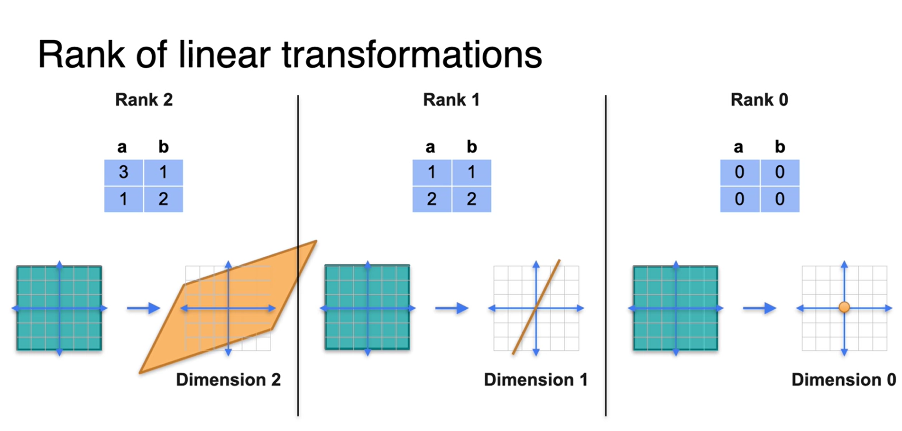
Determinante de uma matriz como área
O determinante de uma matriz é a área após a transformação linear.
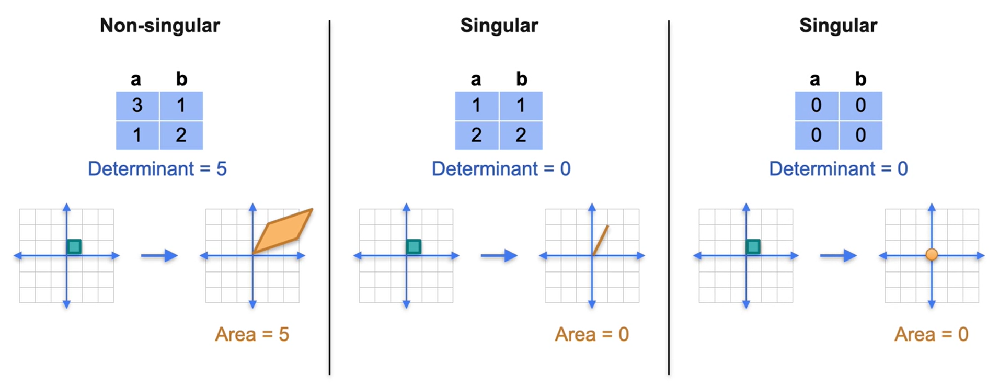
Determinante de um produto
\(det(AB) = det(A)det(B)\)
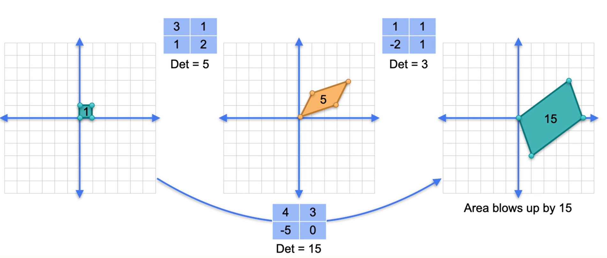
O produto de uma matriz singular e uma não singular, independente da ordem, será singular.
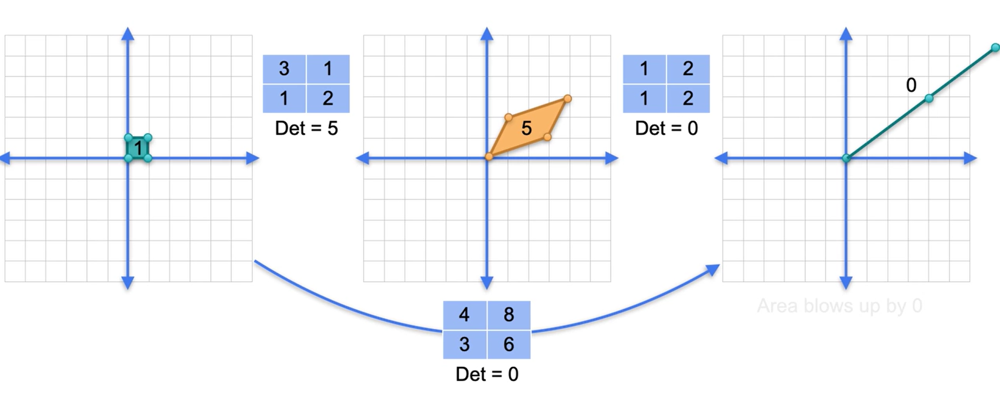
Determinantes de inversos
- O determinante de uma matriz inversa é o inverso do determinante de uma matriz.
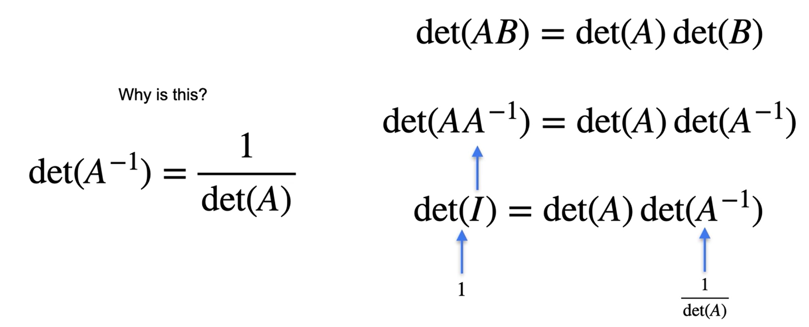
- E matrizes singulares não possui inversa.
- O determinante de uma matriz identidade será sempre 1.
Questionário
Q1. Seja T uma transformação linear no plano representada pela seguinte matriz:
\(\begin{bmatrix} 1&0\\2&3 \end{bmatrix}\)
A classificação de T é:
Para classificar uma transformação linear, você geralmente calcula o determinante da matriz associada. O determinante nos ajuda a entender se a transformação é invertível, e a classificação pode ser feita com base no valor do determinante.
Passos Manuais para Cálculo do Determinante
Dada a matriz:
\(T = \begin{pmatrix} 1 & 0 \\ 2 & 3 \end{pmatrix}\)
O determinante de uma matriz ( 2 ), dada por:
\(\text{det}(T) = ad - bc\)
onde a matriz ( T ) tem a forma:
\(T = \begin{pmatrix} a & b \\ c & d \end{pmatrix}\)
Para a matriz \(T = \begin{pmatrix} 1 & 0 \\ 2 & 3 \end{pmatrix}\), temos:
- ( a = 1 )
- ( b = 0)
- ( c = 2 )
- ( d = 3 )
O determinante é calculado como: \(\text{det}(T) = (1 \times 3) - (0 \times 2) = 3 - 0 = 3\)
Como o determinante é diferente de zero, a transformação \(( T )\) é invertível.
Classificação
- Invertível (ou não singular): Se o determinante é diferente de zero.
- Não invertível (ou singular): Se o determinante é zero.
Neste caso, a transformação ( T ) é invertível.
Usando Python com NumPy
Aqui está como você pode calcular o determinante em Python usando a biblioteca NumPy:
import numpy as np
# Definindo a matriz
T = np.array([[1, 0], [2, 3]])
# Calculando o determinante
determinante = np.linalg.det(T)
# Exibindo o resultado
print(determinante)Usando R
Aqui está como você pode calcular o determinante em R:
# Definindo a matriz
T <- matrix(c(1, 2, 0, 3), nrow=2, byrow=TRUE)
# Calculando o determinante
determinante <- det(T)
# Exibindo o resultado
print(determinante)Em ambos os casos, o resultado do determinante será 3, indicando que a matriz é invertível.
Q2. Considere a transformação linear T que mapeia os vetores (1,0) e (0,1) da seguinte maneira:
\(T(0,1)=(2,5)\) \(T(1,0)=(3,1)\)
A área do paralelogramo abrangido pela transformação dos vetores (0,1) e (1,0) é:
A área do paralelogramo formado pelos vetores transformados por uma transformação linear pode ser encontrada calculando o determinante da matriz que representa essa transformação. A matriz de transformação é construída a partir das imagens dos vetores básicos ( (1,0) ) e ( (0,1) ).
Passos Manuais
Dada a transformação:
\([ T(1,0) = (3,1) ]\) \([ T(0,1) = (2,5) ]\)
A matriz que representa essa transformação é:
\([ T = \begin{pmatrix} 3 & 2 \\ 1 & 5 \end{pmatrix} ]\)
A área do paralelogramo é dada pelo valor absoluto do determinante desta matriz.
O determinante de uma matriz \(( 2 \times 2 )\) é calculado como:
\([ \text{det}(T) = ad - bc ]\)
onde:
\([ T = \begin{pmatrix} a & b \\ c & d \end{pmatrix} ]\)
Substituindo os valores da matriz ( T ):
\([ \text{det}(T) = (3 \times 5) - (2 \times 1) = 15 - 2 = 13 ]\)
Portanto, a área do paralelogramo é 13.
Usando Python com NumPy
Aqui está como você pode calcular o determinante em Python usando a biblioteca NumPy:
import numpy as np
# Definindo a matriz
T = np.array([[3, 2], [1, 5]])
# Calculando o determinante
determinante = np.linalg.det(T)
# Exibindo o valor absoluto do determinante (área do paralelogramo)
area = abs(determinante)
print(area)Usando R
Aqui está como você pode calcular o determinante em R:
# Definindo a matriz
T <- matrix(c(3, 1, 2, 5), nrow=2, byrow=TRUE)
# Calculando o determinante
determinante <- det(T)
# Exibindo o valor absoluto do determinante (área do paralelogramo)
area <- abs(determinante)
print(area)Em ambos os casos, o valor do determinante será 13, que é a área do paralelogramo formado pelos vetores transformados.
Base
Base sãos os vetores que formam o ponto num plano. Não é uma base se os vetores seguirem a mesma direção.
Verificando se um conjunto é linearmente independente ou não
Geometricamente, quando dois elementos em \(R^2~ \text{ou}~R^3~\)são Linearmente Dependentes, eles estão na mesma reta, quando colocados na mesma origem.

Geometricamente, quando dois elementos em \(R^2\) ou \(R^3\) são L.I., eles não estão na mesma reta, quando colocados na mesma origem.

Geometricamente, se três vetores em \(R^3\) são linearmente dependentes, ele estão no mesmo plano, quando colocados na mesma origem, caso contrário são linearmente independentes.

Exemplo 1: O conjunto \({(1, 0), (0, 1)}\) em \(R^2\) é Linearmente Independente. De fato, a equação:
\(\alpha1(1, 0) + \alpha2(0, 1) = (0, 0)\)
só vale para \(\alpha1 = \alpha2 = 0\). Assim, os vetores \((1, 0)\) e \((0, 1)\) são L.I.
https://www.ime.unicamp.br/~marcia/AlgebraLinear/dependencia_linear.html
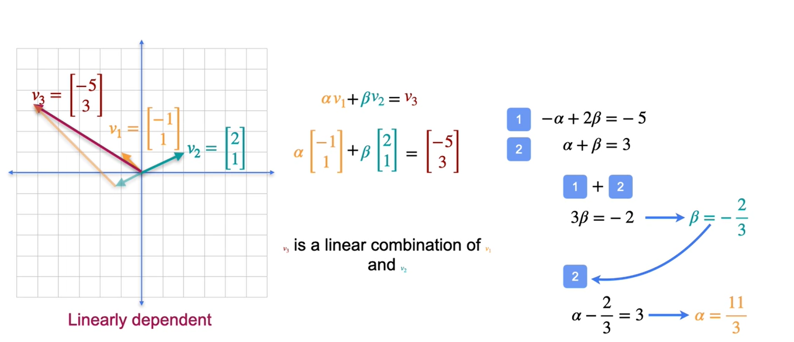
Definição formal de base
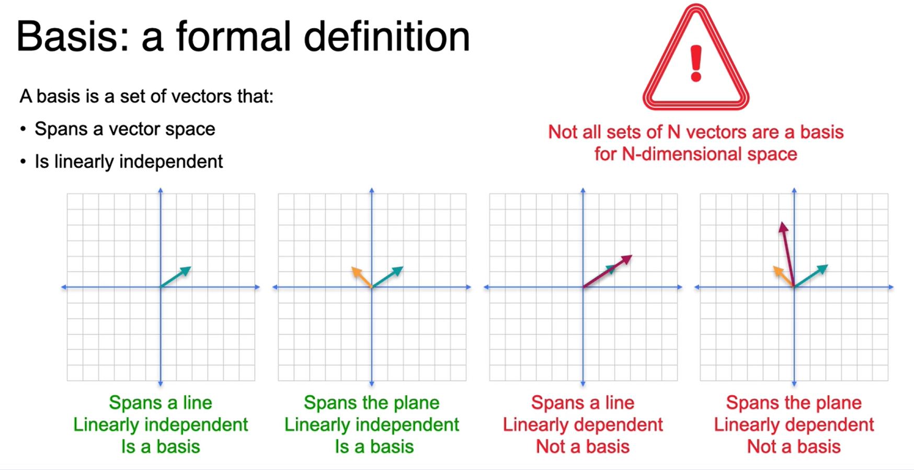
Autovalores e Autovetores
Seja \(A\) uma matriz \(\text{n x n}\). O escalar \(\lambda\) é um autovalor de \(A\) quando há um vetor \(x\) não nulo tal que \(Ax=\lambda x\). O vetor \(x\) é um autovetor de \(A\) associado a \(\lambda\).
Verificação de autovetores e autovalores
Para a matriz
\[ A = \begin{bmatrix}2&0\\0&-1\end{bmatrix} \]
Verifique que \(x_1=(1, 0)\) é um autovetor de \(A\) associado ao autovalor \(\lambda_1=2\) e que \(x_2=(0, 1)\) é um autovetor de \(A\) associado ao autovalor \(\lambda_2= 1\).
Solução:
Multiplicar \(x_1\) à esquerda por \(A\) produz
\[ A = \begin{bmatrix}2&0\\0&-1\end{bmatrix} \begin{bmatrix}1\\0\end{bmatrix}=\begin{bmatrix}2\\0\end{bmatrix}=2\begin{bmatrix}1\\0\end{bmatrix} \]
Então, \(x_1 = (1, 0)\) é um autovetor de \(A\) associado ao autovalor \(\lambda_1= 2\). Da mesma forma, multiplicar \(x_2\) à esquerda por \(A\) produz
\[ A = \begin{bmatrix}2&0\\0&-1\end{bmatrix} \begin{bmatrix}0\\1\end{bmatrix}=\begin{bmatrix}0\\-1\end{bmatrix}=-1\begin{bmatrix}0\\1\end{bmatrix} \]
Então \(x_2 = (0,1)\) é um autovetor de \(A\) associado ao autovalor \(\lambda_2 = -1\)
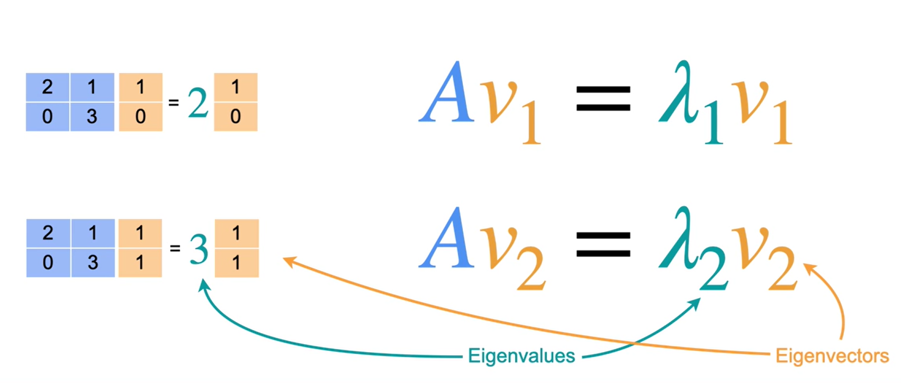
Cálculo
Autovalores
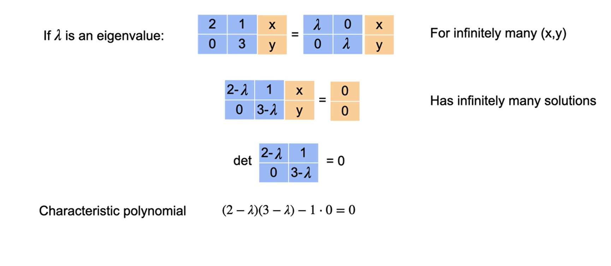
Autovetores
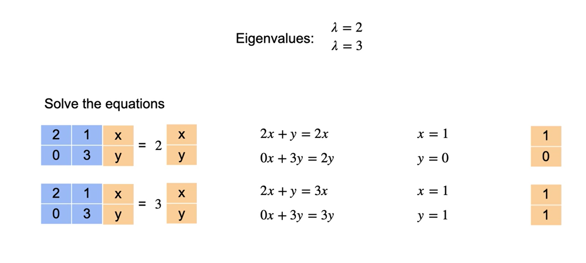
Para encontrar os autovalores e os autovetores de uma matriz \(A\) de ordem \(n\), seja \(I\) a matriz identidade \(\text{n x n}\). Reescrever \(Ax = \lambda x\) como \(\lambda Ix = Ax\) e reorganizar fornece \((\lambda I-A)x=0\). Este sistema homogêneo de equações possui soluções não nulas se e somente se a matriz dos coeficientes \((\lambda I - A)\) for não invertível, ou seja, se e somente se seu determinante for zero. O próximo teorema afirma formalmente isso.
TEOREMA: Autovalores e autovetores de uma matriz Seja A uma matriz \(\text{n x n}\).
- Um autovalor de \(A\) é um escalar \(\lambda\) tal que \(det(\lambda-A)=0\).
- Os autovetores de \(A\) associados a \(\lambda\) são as soluções não nulas de \((\lambda I - A)=0\).
Encontre os autovalores e autovetores associados de \(A = \begin{bmatrix} 2 & -12 \\ 1 & -5 \end{bmatrix}\)
Solução
O polinômio característico de \(A\) é
\[ |\lambda I - A| = \begin{vmatrix} \lambda - 2 & 12 \\ -1 & \lambda + 5 \end{vmatrix} = \lambda^2 + 3\lambda - 10 + 12 = (\lambda + 1)(\lambda + 2). \]
Assim, a equação característica é \((\lambda + 1)(\lambda + 2) = 0\), o que dá \(\lambda_1 = -1\) e \(\lambda_2 = -2\) como autovalores de \(A\). Para encontrar os autovetores associados, resolva o sistema linear homogêneo representado por \((\lambda I - A)x = 0\) duas vezes: primeiro para \(\lambda = \lambda_1 = -1\) e, então, para \(\lambda = \lambda_2 = -2\). Para \(\lambda_1 = -1\), a matriz dos coeficientes é
\[ (-1)I - A = \begin{bmatrix} -1 - 2 & 12 \\ -1 & -1 + 5 \end{bmatrix} = \begin{bmatrix} -3 & 12 \\ -1 & 4 \end{bmatrix}, \]
que se reduz por linhas a \(\begin{bmatrix} 1 & -4 \\ 0 & 0 \end{bmatrix}\), mostrando que \(x_1 - 4x_2 = 0\). Tomando \(x_2 = t\), você pode concluir que todo autovetor associado a \(\lambda_1\) é da forma
\(x = \begin{bmatrix} x_1 \\ x_2 \end{bmatrix} = \begin{bmatrix} 4t \\ t \end{bmatrix} = t \begin{bmatrix} 4 \\ 1 \end{bmatrix}, \quad t \neq 0\).
Para \(\lambda_2=-2\), você tem
\((-2)I - A = \begin{bmatrix} -2 - 2 & 12 \\ -1 & -2 + 5 \end{bmatrix} = \begin{bmatrix} -4 & 12 \\ -1 & 3 \end{bmatrix} \rightarrow \begin{bmatrix} 1 & -3 \\ 0 & 0 \end{bmatrix}.\)
Tomando \(x_2 = t\), você pode concluir que todo autovetor associado a \(\lambda_2\) é da forma
\(x = \begin{bmatrix} x_1 \\ x_2 \end{bmatrix} = \begin{bmatrix} 3t \\ t \end{bmatrix}=t\begin{bmatrix} 3 \\ 1 \end{bmatrix}, \quad t \neq 0.\)
Redução de dimensionalidade e projeção
A redução de dimensionalidade consiste em reduzir o número de colunas de um dataset
Preservar o máximo de informação possível
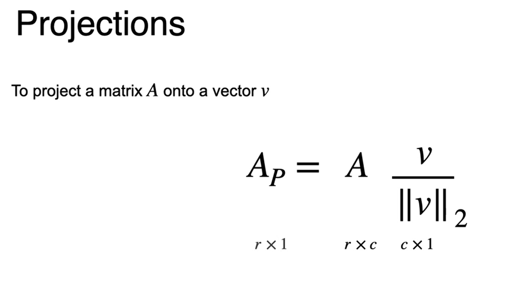
Motivação para PCA
Reduzir dimensionalidade
Visualização de dados mais eficientes
Variância e covariância
PCA se baseia em alguns conceitos estatísticos
- média
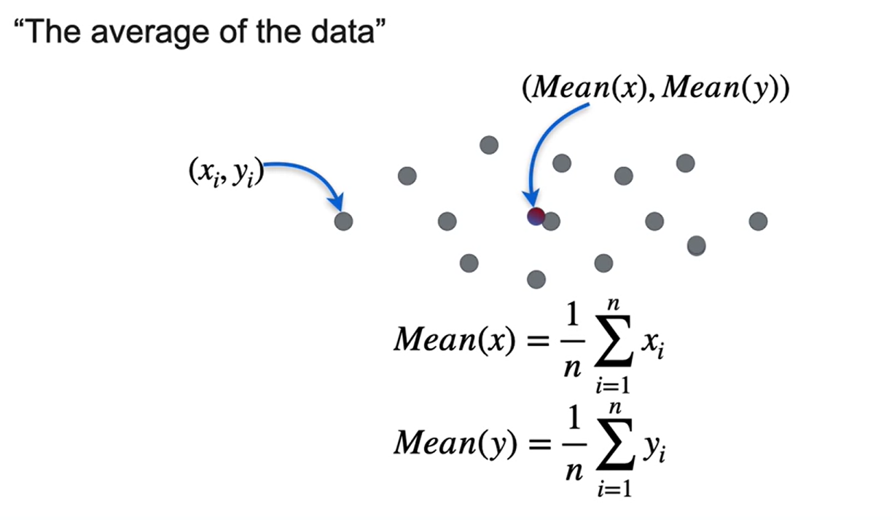
- Variância
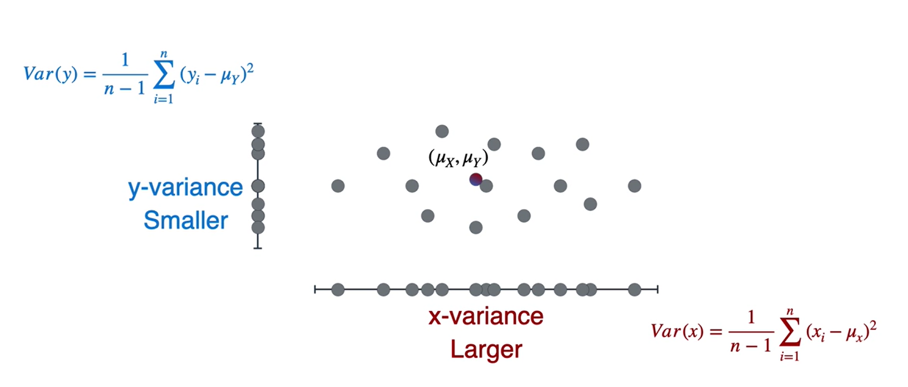
- Covariância
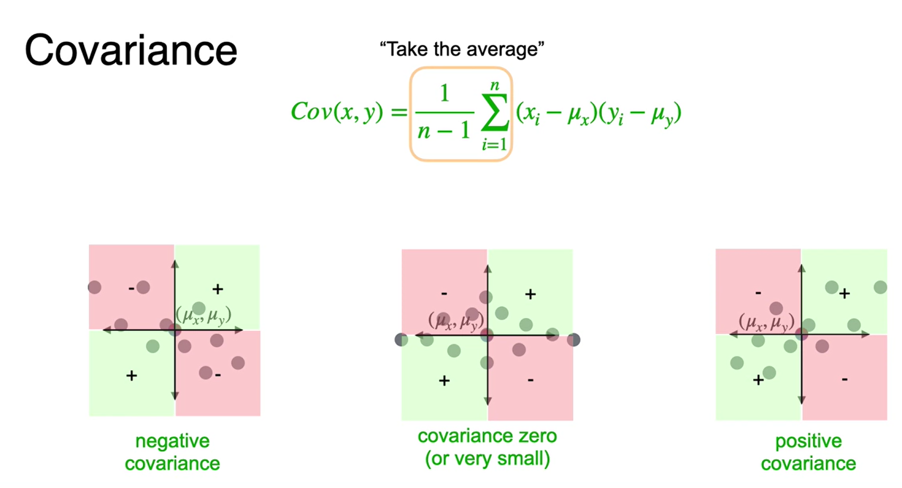
Matriz de covariância
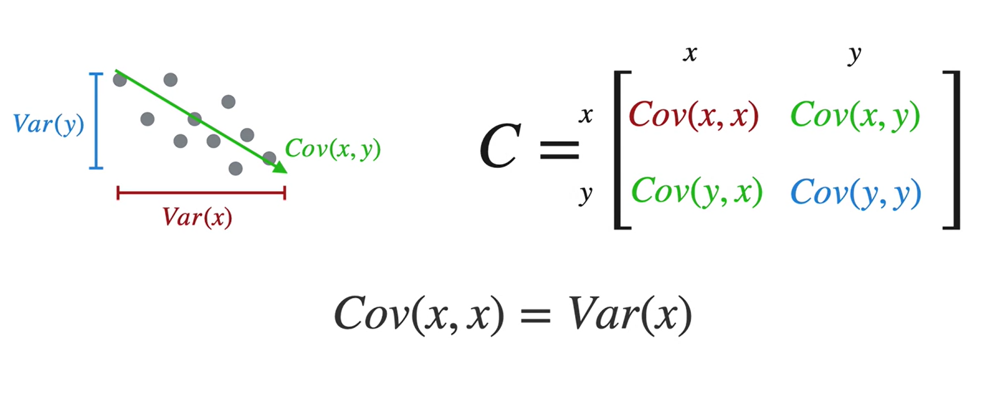
Representação
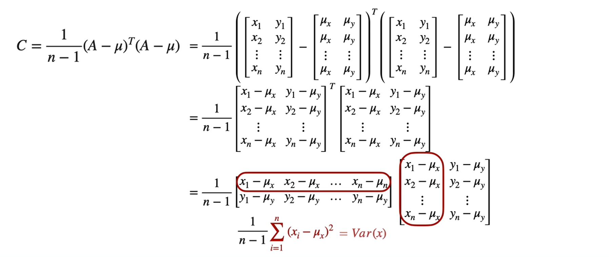
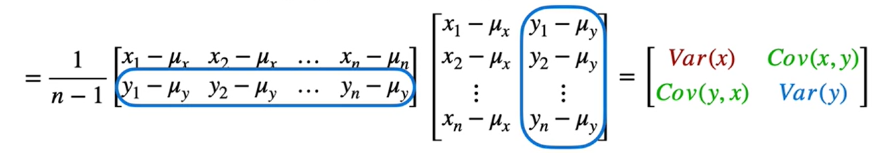
Aplicação:
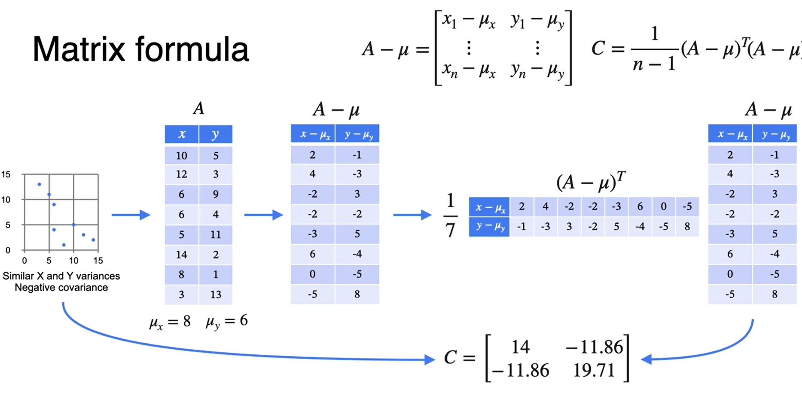
PCA - visão geral
PCA ⇒ Projeções, Autovalorese matriz de covariância.
Toda matriz de covariância é simétrica.
PCA - formulação matemática
Imagine que temos \(5\) variáveis \((x_1, x_2, x_3, x_4, x_5)\) e queremos reduzir a apenas \(2\) variáveis.
- criamos uma matriz \(X\) com o conjunto de dados.
\[ \begin{equation} \begin{aligned} \\ &X=\left[\begin{array}{cccc} x_{11} & x_{12} & \ldots & x_{15} \\ x_{21} & x_{22} & \ldots & x_{25} \\ \vdots & \vdots & \ddots & \vdots \\ x_{n 1} & x_{n 2} & \ldots & x_{n 5} \end{array}\right] \end{aligned} \end{equation} \]
- centralizamos os dados ⇒ \(X - \mu\)
\[ \begin{equation}\boldsymbol{X}-\boldsymbol{\mu}=\left[\begin{array}{cccc}x_{11}-\mu_1 & x_{12}-\mu_2 & \ldots & x_{15}-\mu_5 \\x_{21}-\mu_1 & x_{22}-\mu_2 & \ldots & x_{25}-\mu_5 \\\vdots & \vdots & \ddots & \vdots \\x_{n 1}-\mu_1 & x_{n 2}-\mu_2 & \ldots & x_{n 5}-\mu_5\end{array}\right]\end{equation} \]
- Calculamos a matriz de covarância
\[ \begin{equation}C=\frac{1}{n-1}(X-\mu)^T(X-\mu)=\left[\begin{array}{ccccc}\operatorname{Var}\left(X_1\right) & \operatorname{Cov}\left(X_1, X_2\right) & \operatorname{Cov}\left(X_1, X_3\right) & \operatorname{Cov}\left(X_1, X_4\right) & \operatorname{Cov}\left(X_1, X_5\right) \\\operatorname{Cov}\left(X_1, X_2\right) & \operatorname{Var}\left(X_2\right) & \operatorname{Cov}\left(X_2, X_3\right) & \operatorname{Cov}\left(X_2, X_4\right) & \operatorname{Cov}\left(X_2, X_5\right) \\\operatorname{Cov}\left(X_1, X_3\right) & \operatorname{Cov}\left(X_2, X_3\right) & \operatorname{Var}\left(X_3\right) & \operatorname{Cov}\left(X_3, X_4\right) & \operatorname{Cov}\left(X_3, X_5\right) \\\operatorname{Cov}\left(X_1, X_4\right) & \operatorname{Cov}\left(X_2, X_4\right) & \operatorname{Cov}\left(X_3, X_4\right) & \operatorname{Var}\left(X_4\right) & \operatorname{Cov}\left(X_4, X_5\right) \\\operatorname{Cov}\left(X_1, X_5\right) & \operatorname{Cov}\left(X_2, X_5\right) & \operatorname{Cov}\left(X_3, X_5\right) & \operatorname{Cov}\left(X_4, X_5\right) & \operatorname{Var}\left(X_5\right)\end{array}\right]\end{equation} \]
- Calculamos os autovalores e autovetores da matriz de covariância e classifique-os do menor pro maior.
\[ \begin{equation}\left\lvert\, \begin{array}{ll}\lambda_1 & v_1 \\\lambda_2 & v_2 \\\lambda_3 & v_3 \\\lambda_4 & v_4 \\\lambda_5 & v_5\end{array}\right.\end{equation} \]
- Criar uma matriz para projetar os dados
\[ \begin{equation}V = \begin{bmatrix}\frac{v_1}{||v_1||_2} & \frac{v_2} {||v_2||_2}\end{bmatrix} \end{equation} \]
- Projetar os dados no vetor escolhido
\[ \begin{equation}X_{PCA} = (X-\mu)V\end{equation} \]